River junctions restored Nine square brown blocks were river junctions drawn with cave-wall artwork. They now join the west, east and south streams, with rounded banks, animated water and the existing positional river sound. World-map colors and light transmission also recognize them as water.
D2 junctions at 5,2 and 8,2 Before 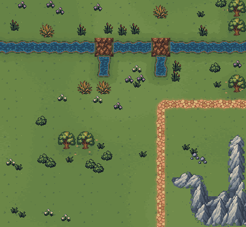
After 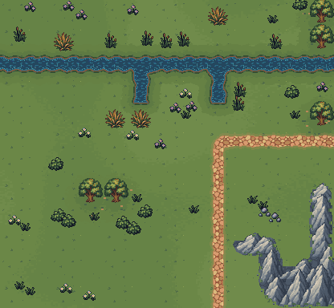
D2 / 7,3 — gameplay view Day 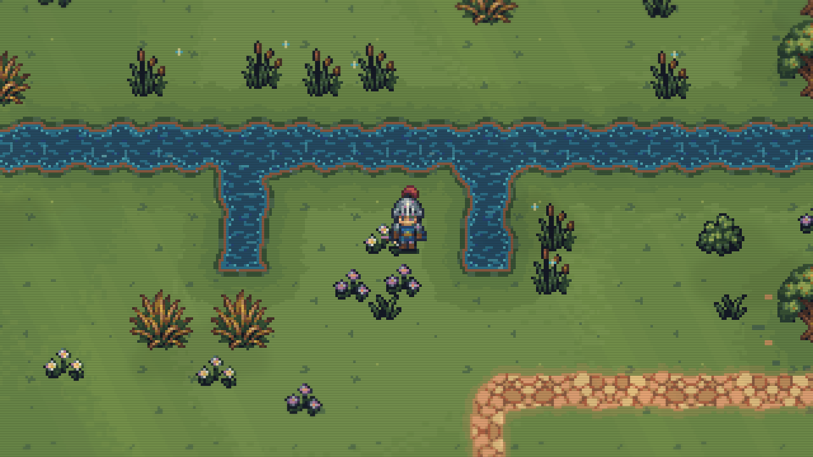
Night view 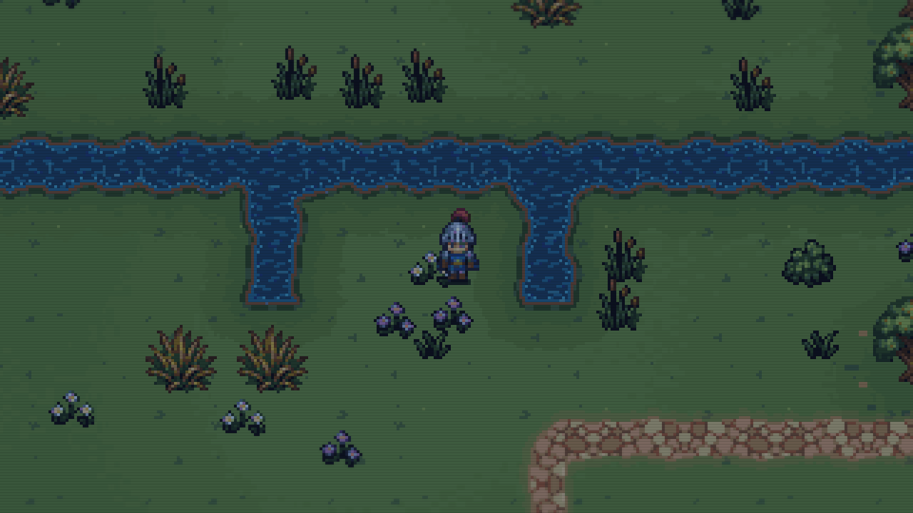
Other six affected regions C2 junctions at 10,2 Before 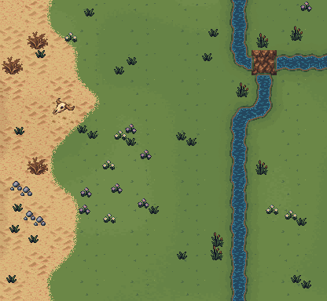
After 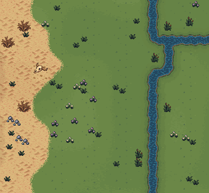
E5 junctions at 3,2 Before 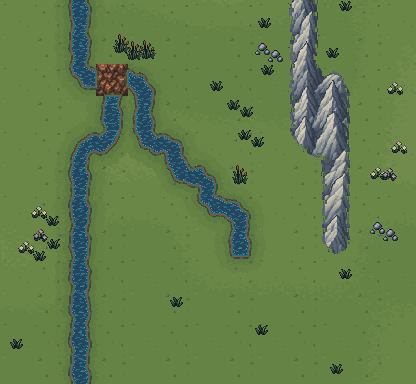
After 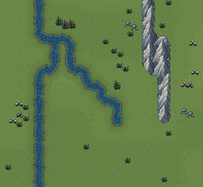
C6 junctions at 10,9 Before 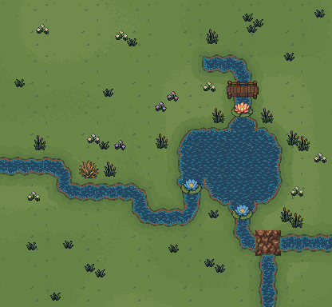
After 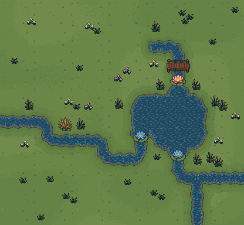
D6 junctions at 6,6 and 9,8 Before 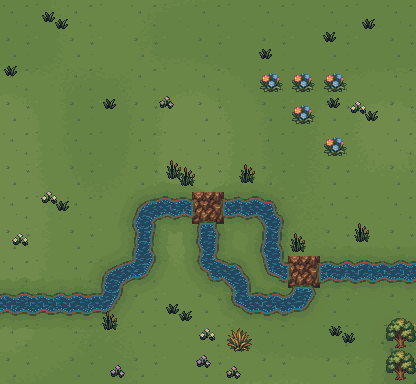
After 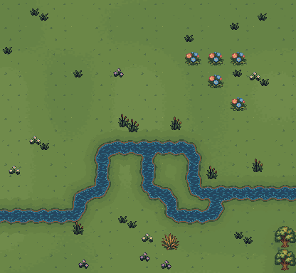
Local Release build: zero warnings or errors. All 369 focused overworld checks passed, including all nine junctions, water animation, sound, overview colors, lighting, and unchanged gameplay/RNG in the rendering fixtures. Before maps: retained October 12, 07:43 UTC captures. After maps and gameplay views: final isolated test run. No map, movement-rule or save-format changes. Checks · Capture provenance